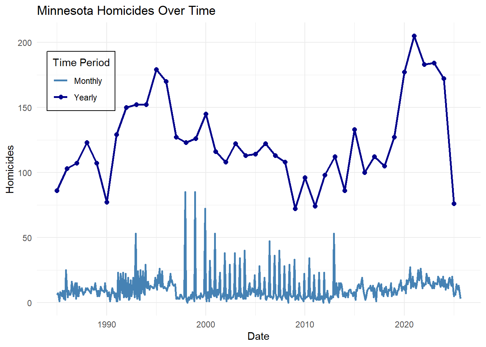
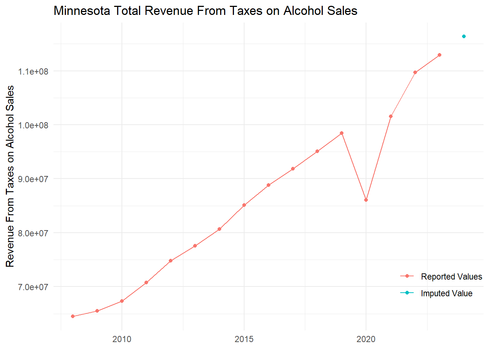
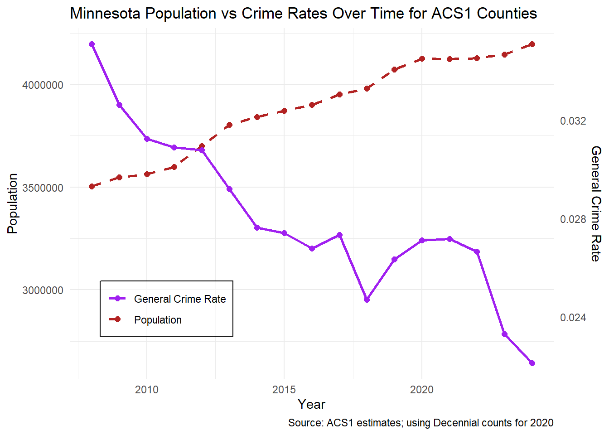
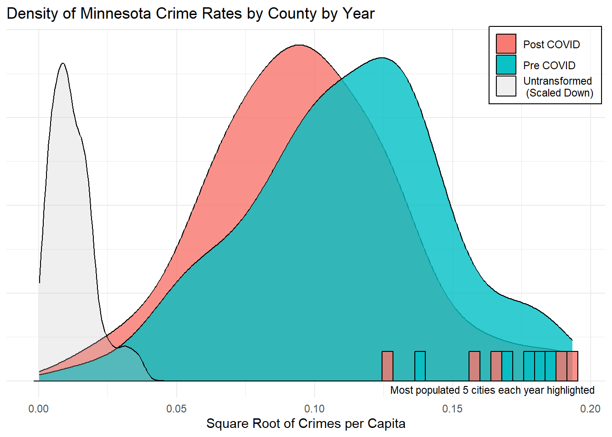
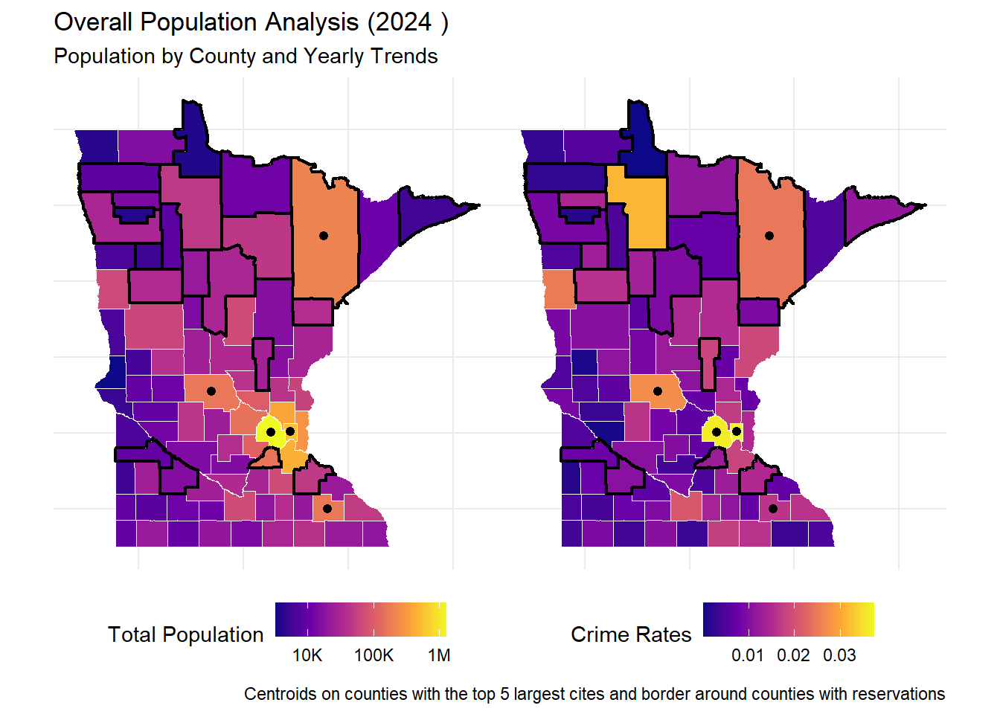
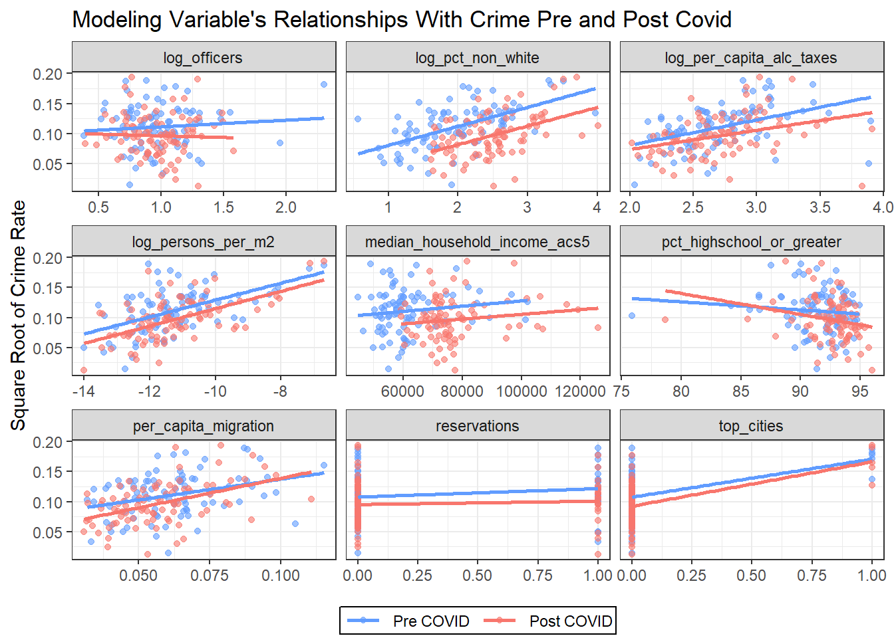
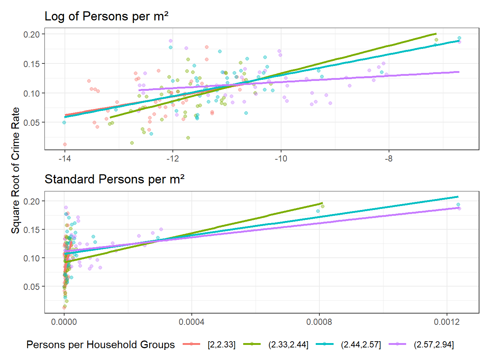
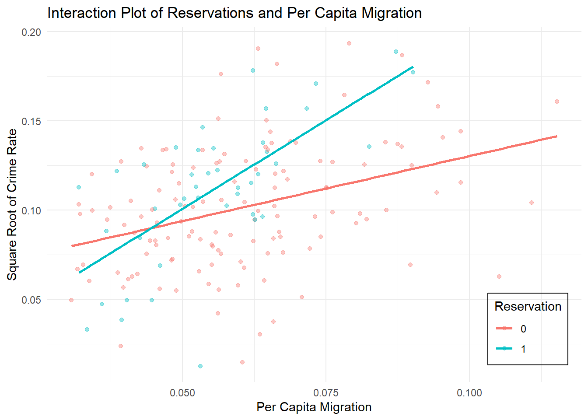
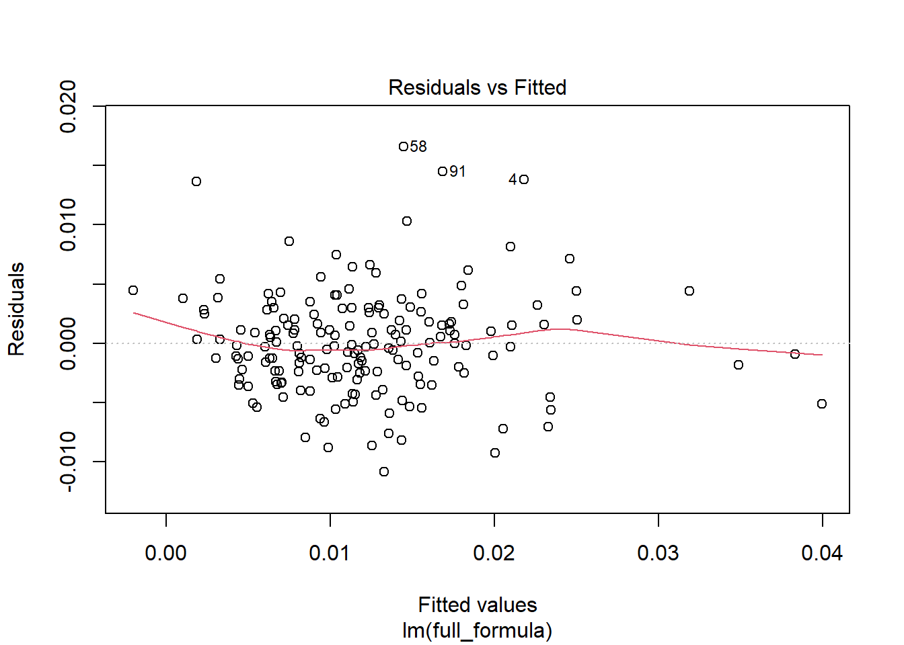
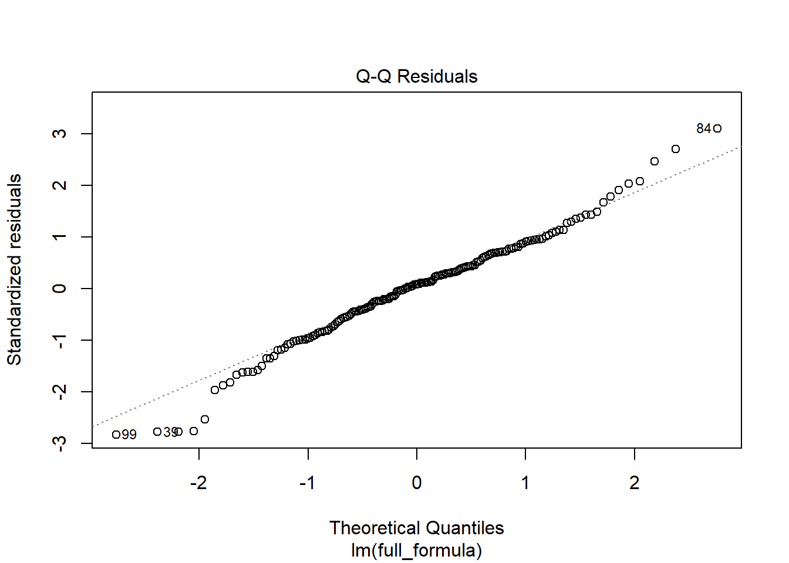

| Variable | B | SE_B | Beta | T | Sig_T |
|---|---|---|---|---|---|
| ALCOHOLTAXES | 1595.33990 | 380.76236 | 0.33367 | 4.19000 | 0.00010 |
| BELOWPOVERTYLINE | 4.65875 | 2.74999 | 0.15941 | 1.69400 | 0.09430 |
| COPRATIO | -1.72003 | 1.97365 | -0.06510 | -0.87100 | 0.38620 |
| PERSONSWITHDIPLOMA | 3.78480 | 3.84462 | 0.11740 | 0.98400 | 0.32800 |
| FEMALEHEADED | 0.16999 | 0.43491 | 0.02303 | 0.39100 | 0.69700 |
| HETEROGENEITY | 41.59058 | 25.20594 | 0.12895 | 1.65000 | 0.10310 |
| NETMIGRATION | 2.95424 | 1.08834 | 0.23224 | 2.71400 | 0.00820 |
| NOT2PARENTS | 83.28531 | 23.98275 | 0.33217 | 3.47300 | 0.00090 |
| PERSONSPERMILE | 139.62194 | 72.31688 | 0.16876 | 1.93100 | 0.05730 |
| PERCENTYOUNGMALES | -207.83213 | 193.87303 | -0.08147 | -1.07200 | 0.28710 |
| Constant | -977.27280 | 374.18150 | NA | -2.61200 | 0.01080 |
Minnesota Crime: Patterns Over Time and Across COVID
A Capstone Project for the Department of Math & Statistics
William Hamilton Borer Seabloom
Advised by Dr. Tyler George
Cornell College
Feb x 2026
Abstract
In this paper, a 1998 study examining the sociological factors that impact crime across Minnesota counties is revisited. The original study’s parameters and data are extended from 1998 to the present and analyzed across two five-year periods before and after the COVID-19 pandemic. A clear spike in crime during COVID has been noted in previous literature, and this study examines whether traditional sociological predictors of crime changed both during COVID and over the longer period from 1998 to the present. The analysis employs the same core techniques used in the original study, including correlation analysis and OLS regression, with additional LASSO regression and structural break tests, to assess how the relationships between crime and its determinants evolved over time.
Consistent with previous literature, a clear increase in crime during the COVID period is initially observed. Additionally, graphical analysis reveals several significant correlations between classic predictors and crime, as well as apparent shifts in these relationships during COVID. However, once these relationships are formally modeled using OLS regression, the interaction terms and direct effects associated with COVID become statistically insignificant, leaving only a small subset of the original predictors with meaningful explanatory power. While these remaining variables reflect some changes from the original 1998 study, they also indicate continuity in key determinants of crime. Notably, the inclusion of an indicator variable for counties containing tribal reservations emerges as a meaningful addition, with both its main effect and its interaction with net migration showing statistical significance. Median household income and population density also remain significant predictors of crime. Overall, these findings suggest that while crime levels increased during the COVID period, the underlying sociological relationships driving crime across Minnesota counties remained largely stable. At the same time, the results highlight an evolution in the importance of certain predictors since the 1998 study, particularly the role of reservations and migration, which expand upon the original findings regarding the factors influencing county-level crime.
Introduction
In 1998 J. Mark Norman and Donald E. Arwood [1] published a paper titled “A Social Disorganization Theory of County Crime Rates in Minnesota” describing how the many different sociological measures of a society’s organization and control affect the crime rates in a community. These factors were measured across Minnesota counties and included factors such as education, wages, population density, and police presence. Recently, beginning during early 2020, the COVID-19 pandemic changed many factors of our society and disrupted many dimensions of social life. As discussed by Boman and Gallupe in 2020 [3] one of these many impacts was on crime rates, particularly in relation to the more serious violent crimes analyzed in Norman and Arwood’s 1998 study [1]. This raises an important question: Across Minnesota counties, how have the relationships between crime and its determinants changed over time, particularly in response to the COVID-19 pandemic?
The main goal of this research is to build on Norman and Arwood’s 1998 study, by not only redoing the analysis with recent data but also looking at how these relationships have changed due to the COVID-19 pandemic. With crime and its prevention being such a large part of our world, and COVID changing many key parts of our society, it is important to reevaluate how typical sociological factors believed to relate to crime could have shifted during the COVID-19 pandemic. The state of these relationships today is also important in the future prediction/prevention of crime particularly for regulations on a county or state level.
To investigate this question, the study will compare crime counts from the FBI’s Crime Data Explorer with demographic and socioeconomic indicators drawn from the U.S. Census five-year county-level estimates. The analysis will include all 87 Minnesota counties and will operationalize crime rates as the number of part I index offenses (homicide, burglary, robbery, aggravated assault, rape, larceny, motor vehicle theft, and arson) per county, normalized by population. This definition of crime aligns with Norman and Arwood’s earlier work [1] while also building on the more serious offenses that Boman and Gallupe (2020) [3] identified as trending upward during the COVID-19 pandemic. Differences in crime rates, averaged across the five-year periods before and after the onset of the pandemic, will be examined to assess whether structural changes occurred. These differences will be evaluated through statistical modeling of both the pre and post-pandemic county-level data, as well as models estimating changes over time.
Literature Review
This project is informed by several key sources: Norman and Arwood (1998) [1], James and Logan (2008) [2], and Boman and Gallupe (2020) [3]. Together, these works provide a foundation for understanding the sociological determinants of crime, the limitations of available data, and the unique disruptions brought about by the COVID-19 pandemic.
Norman and Arwood’s 1998 study analyzed the relationship between crime rates and a variety of sociological measures at the county level in Minnesota. Their findings demonstrated that among a variety of traditional sociological indicators of crime only alcohol consumption proxied by the county’s alcohol tax revenue, net migration in and out of the county, and households missing one or both parents, were significantly related to crime in Minnesota counties at the .05 level.
This work provides the methodological and theoretical foundation for the present project. While their study focused on the sociological context of the late 20th century, this research builds upon their approach by incorporating data up to the 2024 ACS 5 estimates and examining how these relationships may have shifted due to the COVID-19 pandemic.
While this study aims to replicate the factors studied in Norman and Arwood’s original study there are some key differences in the analyses. Comparing the variables used in each study, both crime rates are a 5 year average of part 1 index crimes retrieved from the FBI’s crime reports. To measure household income levels the study includes the median income, percentage of the population below $5000 income, and below the poverty line. Both studies draw from the U.S census’ 5 year ACS estimates. The same is done for the measures of heterogeneity, net migration, households with less than two parents, the percent of the population made up of young males, and the percent of the population with a high school diploma or greater. In the original study, population density is stated to come from the census’ estimates, but due to lack of availability is determined in this study to be the population of the county divided by the area of the county in m2. The final explanatory variable used in their study, revenue from taxes on alcohol sales, comes from the Minnesota Department of Revenue website and is also averaged across 5 year periods. Having mostly the same source data as Norman and Arwood’s [1] original study, a general comparison to their original 1998 study is still possible with the understanding of the potential and real changes in the data’s collection and reporting.
In order to track some of these changes, James and Logan’s 2008 report provides an overview of how the FBI collects and reports crime statistics, detailing the methodologies, limitations, and potential sources of bias within the Uniform Crime Reporting (UCR) database. Their report is particularly important because it highlights challenges such as underreporting, changes in reporting practices, and differences in local enforcement priorities. James and Logan state that underreporting in the FBI crime data is a large problem, with systematic errors produced from the way that the data is collected. This bias stems from the fact that the only crimes the FBI report are ones that the police have reported to them, and police officers are only aware of citizen reported crimes leading to two large sources of underreporting. Changes in reporting practices also affect this data, in particular the arson and rape counts. The way that rape was defined in this data changed in 2013 to remove the requirement of it being ‘forcible’ increasing the counts of this crime around this period as local law enforcement agencies changed their definition.
Furthermore, in any one instance of crimes being committed e.g a break in and homicide, only the homicide will be reported as it is the more severe of the two crimes. This leads to additional underreporting of less ‘severe’ crimes frequently committed in tandem with more ‘severe’ crimes. The one exception to this rule being arson which is counted on top of any crime it is committed with. However, arson counts are only recorded if it can be proven that the fire was willfully set meaning it is difficult to actually prove and then report arson as an offense.
All of these insights are crucial for interpreting the results of this project, as they remind us that observed patterns in county-level crime rates may partly reflect variation in data quality or reporting practices rather than actual changes in criminal activity. By incorporating this perspective, this study can more carefully interpret both the limitations and strengths of using FBI crime statistics in the context of this paper’s results.
Boman and Gallupe’s research examines the effects of the COVID-19 pandemic on crime trends, with particular attention to how crime patterns shifted during periods of widespread social disruption. They found that while many types of crime declined during the pandemic, homicide and other serious violent crimes rose due to young people (primarily males) being put in positions where they were in close proximity to partners or family members and further from their friends. This change in social structures led to less time spent with friends in the situations where the smaller crimes such as vandalism are often committed. They also hypothesized that the higher counts of more severe crimes such as homicide and aggravated assault were the result of these potential minor offenders being moved into a situation where they have a much greater chance of committing a violent crime against their partners or family members due to a lack of normal outlets. Their findings suggest that structural shocks, such as a global pandemic, can have separate effects on different categories of crime. This study directly informs the paper, as it investigates whether similar shifts occurred in Minnesota counties, particularly in the increased prevalence of violent crime relative to overall crime rates as well as a potential shift in the predictability of crime after the pandemic.
Taken together, these works establish the intellectual groundwork for this project. Norman and Arwood demonstrate how sociological indicators can be systematically linked to crime rates at the county level. James and Logan’s 2008 report provides guidance on the interpretation of crime statistics, ensuring that my analysis acknowledges the methodological challenges of working with FBI data. Finally, Boman and Gallupe highlight the COVID-19 pandemic as a significant structural event that reshaped crime in the United States, motivating the inclusion of a temporal comparison between pre and post-pandemic trends in Minnesota. Building on these sources, my study aims to contribute by both replicating and extending prior methods to assess whether longstanding sociological-crime relationships have been altered by the COVID-19 pandemic.
Hypotheses
Consistent with the findings of Norman and Arwood [1], we would expect that prior to the COVID-19 pandemic, county-level crime rates will be positively associated with indicators of social disorganization, particularly higher net migration rates, greater proportions of households missing one or both parents, and higher levels of alcohol consumption proxied by county alcohol tax revenue. In contrast, more traditional socioeconomic indicators such as median household income, educational attainment, and population density are expected to exhibit weak or statistically insignificant relationships with crime in the pre-pandemic period, as is found in earlier work.
The central hypothesis of this study is that COVID represents a structural shift in the relationship between crime and its sociological determinants. Specifically, that the magnitude and significance of these relationships differ between the pre-pandemic and post-pandemic periods across Minnesota counties. From Jake Boman and Owen Gallupe, this study further hypothesizes that post-pandemic crime patterns, particularly violent crime, are more strongly associated with indicators of family structure and demographic composition, such as the proportion of young males and family disruption, reflecting shifts in routine activities and social proximity during periods of social restriction
Acknowledging the limitations of crime data highlighted by Nathan James and Wayne Logan as well as acknowledged in Norman and Arwood’s study, this study hypothesizes that observed changes in crime rates will vary across offense types and counties in ways that reflect not only true changes in criminal behavior but also differences in reporting practices and data quality. As a result, changes in the modeled relationships between crime and its determinants should be interpreted as the combination of social disruption and institutional variation rather than as being due to criminal activity alone.
Data Description
The data being used in this study consists of two main parts, FBI crime and officer reports, as well as U.S Census Bureau county level ACS 5 year estimates. A collection of other sources were used to supplement and summarize these main sources as well. All of the data and code for this project is publicly available in this Github repository to document the process of this research. Any graphs, tables, and results discussed in this paper can be replicated by following the steps detailed in the repository.
To start, the FBI’s counts of crimes and officers were scraped from their website at a monthly level across all police agencies in Minnesota. As discussed in the literature review, James, Nathan, and Logan Rishard [2] highlight the intricacies to be aware of when using it to draw real world conclusions. Next, using the data from the National Law Enforcement Telecommunication Systems Originating Agency Identifier (NLETS ORI) directory [4] the local police agency data was mapped onto counties. As this data is a scanned PDF document Optical Character Recognition (OCR) was used to convert the data into machine readable text. This process does have some flaws due to the poor quality of the scan and a best effort was made to correct the minimal problems introduced into the data through this process. Additionally, as can be seen in the NLETS ORI directory some police agencies that operate federally or across the whole state cannot be tracked by county and are therefore left out of the crime counts.

Above, a brief look at the monthly/yearly plot of homicides over time shows the issues in the data which are present across all of the FBI’s monthly crime data. The most obvious of these are the December peaks as many police departments report the whole year of crime in December. This lasted from 1998 to 2013 when the FBI again changed how it receives and collects records. James and Logan’s 2008 report [2] details many of the previous shifts in crime data collection and reporting as well. However, grouping the crime data into years removes the month to month reporting problems. It will allow for more direct comparison to the Census estimates.
Alcohol sales tax information was retrieved from the Minnesota Department of Revenue’s website. While this data is lacking some documentation, a general overview of collection and reporting is available at the Minnesota Department of Revenue’s website [6]. The two main inaccuracies cited are that as the gross sales data is not used in calculating taxes it is under less scrutiny than other data and accuracy cannot be guaranteed, and that there are potential errors in location reporting for business with more than one location. For the first issue, this study is using the taxes collected on liquor sales which are closely examined for accuracy, additionally while any incorrect location reporting could affect the results directly it is stated to be only a negligible number of businesses.
Using the liquor gross receipts tax (at 2.5%) information provided from the years 2015-2019 a pre COVID 5 year average was obtained. The Minnesota Department of Revenue’s data for 2024, however, had not yet been released so a value for 2024 was obtained by averaging the slopes between the 2010-2019 and 2022-2023 years of unadjusted dollars where the trend appears fairly continuous and then adding this to the 2023 value. This approach is more appropriate than other methods of imputation given the clear and continuous trend in the data and another more standard method would be heavily impacted by the COVID outliers as can be seen below.

With this data now organized and graphed above, the clear positive trend in the revenue from alcohol sales taxes can now be seen up until COVID. This then dips sharply during COVID and sees a clear structural shift afterwards. These trends , at least after COVID, follow the common narrative seen in studies such as the 2024 National Survey on Drug Use and Health [8] and the Minnesota Department of Health [9]. These reports suggest that alcohol use by adults and minors has decreased or stayed the same in the past years and had a slight uptick during COVID. The drop in sales during COVID could however represent a problem with taxes as a proxy as all in-person stores saw declines in consumerism during the pandemic.
County level 5 year estimates (ACS5) for the demographic variables of interest during the years of 2015-2019 and 2020-2024 were then obtained from the U.S Census Bureau through the tidycensus package. These estimates have their own problems such as sampling and response bias [5]. The main problems from this census data are the fact that data on every county is only available in 5 year average estimates and that these numbers are estimates based on a sample of the population. However, the 5 year averaging is not a problem in our case as we want to examine structural changes resulting from the COVID-19 pandemic and an average across 5 years will be able to represent that. The sampling and response biases, generated from who is sampled and who chooses to respond to a poll, will have to be addressed in the final interpretation of the results as a potential source of bias.
The dependent variable of interest, crime rate, is calculated by summing a 5 year average of all part 1 index crimes collected from the FBI and dividing it by the total population estimate from the census. The available demographic variables (officers per 1000 people, median household income, the percent of households with less than $5000 income, the percent of people with a high school or greater degree, the percent of children missing parents, the percent non white, the percent young males, persons per household, persons per m2, and per capita net migration) used in Norman and Arwood’s 1998 study [1] were then calculated using a variety of census estimates.
The final data being used for modeling contains two rows for each of the 87 Minnesota counties representing the pre and post COVID periods with 5 year average estimates for 2015-2019 and 2020-2024 respectively. The variables used in Norman and Arwood’s 1998 study [1] will be tested in their effects on crime rates before and after to address the question of: how have the relationships between crime and its determinants changed over time, particularly in response to the COVID-19 pandemic?
Research Findings
Using this data, a few graphical representations of crime rates can help to better understand the nature of the data before modeling.

Using ACS 1 year estimates of population, a yearly plot of crime rates and population reveals a consistent downward trend in crime rates per capita, dropping with a steeper slope than the increase in population. This pattern suggests that crime rates have been declining naturally over time. However, consistent with the predictions in the study by Boman, J.H., Gallupe, O, [3] there is a local peak of crime in 2020 and 2021 during the pandemic lockdown. Interestingly, even before the pandemic there was still a sharp uptick in crime rates in 2019 suggesting other factors at play as well. Following this deviation, crime rates decline again by 2023, resuming the pre-pandemic trend. This indicates that the pandemic period represents a temporary disturbance rather than a lasting structural shift in Minnesotan crime trends.

Looking at the general distribution of crime rates post COVID we see a approximately normal distribution after a square root transformation, this transformation will be used through the rest of the modeling process. However the pre COVID distribution remains slightly left skewed but not dramatically. The right tails of both pre and post COVID distributions hold the largest counties suggesting there could be a relationship between population density and crime rates. The shape does not meaningfully change post COVID but there is a clear drop in crime rates able to be seen. This plot demonstrates again the dropping crime rates post COVID as well as a potential relationship between population density and crime.

A spatial analysis of the post COVID five-year averages for crime rates and population reveals distinct geographic patterns and highlights the relationship between population and large cites with crime. Higher crime rates are concentrated within major urban centers, with a noticeable decline in surrounding suburban areas. Outside of the Twin Cities region, other population hubs also exhibit above-average crime rates. One clear outlier is Beltrami County, which can be seen as a clear yellow county in the upper central portion of the crime rate map despite its lack of a high population.
| variable | mean_pre | mean_post | sd_pre | sd_post | p.value |
|---|---|---|---|---|---|
| median_household_income_acs5 | 61656.48276 | 77500.64368 | 11425.78664 | 12977.17976 | 0.00000 |
| pct_non_white | 9.01708 | 13.85626 | 7.57129 | 8.71725 | 0.00013 |
| pct_highschool_or_greater | 91.37000 | 92.51558 | 2.75060 | 2.38527 | 0.00380 |
| crime_rate | 0.01367 | 0.01055 | 0.00808 | 0.00736 | 0.00860 |
| pct_lessthan_5kincome | 4.54495 | 4.08114 | 1.30145 | 1.15803 | 0.01399 |
| per_capita_migration | 0.06175 | 0.05681 | 0.01718 | 0.01665 | 0.05592 |
| pct_young_males | 3.20551 | 3.36270 | 0.58305 | 0.58480 | 0.07759 |
| pct_children_missing_parents | 32.89281 | 32.57961 | 2.06612 | 2.63064 | 0.38376 |
| officers | 2.79728 | 2.71555 | 1.11009 | 0.65202 | 0.55471 |
| persons_per_household | 2.45877 | 2.45170 | 0.20076 | 0.16975 | 0.80233 |
| per_capita_alc_taxes | 16.41118 | 16.32717 | 7.45967 | 7.28797 | 0.94019 |
| persons_per_m2 | 0.00005 | 0.00005 | 0.00016 | 0.00016 | 0.95437 |
An examination of the predictive variables used in [1] indicate no statistically significant changes at the 5% level between the pre and post-COVID periods for the per capita migration, percent young males, percent of children missing parents, officers per 1,000 residents, persons per household, per capita alcohol taxes, and persons per square meter. However, across the rest of the variables we see relatively larger and more significant changes particularly across crime rates, income, education, heterogeneity, and revenue from alcohol taxes.
| variable | estimate | p.value |
|---|---|---|
| persons_per_m2 | 0.4988668 | 0.0000000 |
| per_capita_migration | 0.4249200 | 0.0000000 |
| pct_non_white | 0.4094770 | 0.0000000 |
| per_capita_alc_taxes | 0.3032593 | 0.0000475 |
| persons_per_household | 0.2517364 | 0.0008057 |
| pct_highschool_or_greater | -0.1907060 | 0.0117145 |
| pct_young_males | 0.1832375 | 0.0155131 |
| pct_lessthan_5kincome | 0.1380964 | 0.0691860 |
| officers | 0.1084093 | 0.1544724 |
| pct_children_missing_parents | 0.0864215 | 0.2568433 |
| median_household_income_acs5 | -0.0067137 | 0.9299388 |
Further, correlation analyses show that many of the variables of interest exhibit reasonably strong and significant correlations with per capita crime. Some of the largest differences seen here between this study and Norman and Arwood’s [1] is the finding of persons per household to be significant while they found no significant correlation, as well as the insignificance of the correlations with median household income and officers per 1000 people. Particularly the persons per household correlation change aligns with Boman and Gallupe’s 2020 study suggesting that the more people quarantined together, the more violence that could occur.

After fitting preliminary models, pct_children_missing_parents, pct_young_males, and persons_per_household were removed due to consistently high p-values (greater than 0.50) across model specifications. The variable pct_lessthan_5kincome was also removed from the main regression models because of its strong negative correlation (−0.70) with median household income and because it represents a fixed dollar amount whose real value changes over time, making it an unstable measure in time series context. Variables prefixed with log_ were transformed using the natural logarithm to stabilize variance and reduce the influence of extreme values often produced from the twin cities counties (Ramsey and Hennipen).
Three additional features were also introduced to capture structural differences across counties: an indicator for whether a county contains a federally recognized reservation (reservations), an indicator for counties containing one of Minnesota’s five largest cities (top_cities; Ramsey, Hennepin, Olmsted, St. Louis, and Stearns), and a pre-/post-COVID indicator distinguishing observations from the 2019 (pre) and 2024 (post) ACS 5-year estimates. Together, these steps yielded a set of nine primary predictors used to explain variation in per-capita crime rates.
Across these predictors in the above plot, a potentially significant change in slope can be seen for log_officers, log_per_capita_alc_taxes, pct_highschool_or_greater, per_capita_migration, and the reservation and top cities indicator variables. Due to the plots above, their interactions with the pre and post COVID indicator will also be tested in subsequent regression models.
To further assess the validity of these variable selection decisions and to identify any potentially omitted predictors or interaction effects, a LASSO regression was fit using the full set of available variables and all interaction terms. This model provides an additional perspective on the relative importance of the full set of potential explanatory variables. Unlike other traditional regressions, which rely on statistical significance conditional on a specified model, the LASSO model penalizes coefficient size and shrinks less informative variables exactly to zero. As a result, variables that remain in the model and have estimated coefficients can be interpreted as those with the strongest predictive relationships with crime rates in a high-dimensional setting. Additionally as the LASSO model relies on normalized predictor values all of the magnitudes of the coefficients can be directly compared and interpreted as variable importance. These factors make it a useful tool in variable selection, as all unimportant variables will have their coefficients set to 0 or near 0 and dropped automatically.
| s0 | |
|---|---|
| reservations:per_capita_migration | 0.4735882 |
| (Intercept) | 0.3417738 |
| post_covid:per_capita_migration | 0.0222235 |
| log_persons_per_m2 | 0.0113038 |
| log_per_capita_alc_taxes:per_capita_migration | 0.0056033 |
| officers:pct_young_males | 0.0015277 |
| pct_lessthan_5kincome:log_persons_per_m2 | 0.0005672 |
| persons_per_household:log_persons_per_m2 | 0.0005175 |
| pct_young_males:log_persons_per_m2 | 0.0003083 |
| per_capita_alc_taxes:pct_lessthan_5kincome | 0.0002772 |
| officers:log_officers | 0.0001589 |
| pct_children_missing_parents:log_pct_non_white | 0.0001438 |
| pct_children_missing_parents:reservations | 0.0001105 |
| per_capita_alc_taxes:log_officers | -0.0004148 |
| post_covid:reservations | -0.0017824 |
| officers:persons_per_m2 | -2.2234808 |
| persons_per_household:persons_per_m2 | -4.4938320 |
The LASSO results indicate that interactions involving population density, migration, alcohol taxation, and reservation status retain the largest non-zero coefficients. In particular, the interaction between reservations and per_capita_migration emerges as the most influential positive predictor, suggesting that migration is strongly associated with crime rates in counties containing reservations. Several additional interaction terms involving population density (persons_per_m2), household size, alcohol tax revenue, and policing levels also retain non-zero coefficients, demonstrating the potential importance of population density and economic factors in explaining crime variation.
While some untransformed demographic and household structure variables that were excluded from the primary regression models reappear in the LASSO results through interaction terms, their coefficients are comparatively small, indicating limited incremental predictive value once dominant spatial and economic factors are accounted for. Overall, the LASSO model supports the primary modeling strategy by confirming that population density, migration, alcohol-related revenue, reservation status, and urban density contain the most information for explaining county-level crime, while many alternative demographic measures contribute little additional explanatory power in a high-dimensional setting.

Potential interaction effects were then examined above using interaction plots constructed by grouping continuous moderators with approximately equal numbers of observations using the cut_number() function in ggplot2. This approach allows for the inspection of shifts in slope while maintaining sufficient observations within each group to avoid over weighting any of the sections.
Inspection of the interaction between persons per square meter (persons_per_m2), and persons per household (persons_per_household) initially suggested shifts in slopes across household-size groups. However, closer examination revealed that this apparent interaction was driven largely by non-linearity in the untransformed population density measure. In particular, the lowest persons-per-household group exhibited a sharply different pattern that becomes much less pronounced after a logarithmic transformation. This provides strong evidence that the significance of the interaction in the unlogged specification was spurious and arose from misspecification rather than a meaningful relationship. A similar pattern was observed for the interaction between officers per 1000 people and the unlogged population density, where a large estimated interaction coefficient coincided with clear violations of linearity. Due to this both of these interactions do not appear in the model as they seem to largely rely on spurious correlation and lose significance once transformed.
As can be seen below, the interaction between reservation status and per-capita net migration remained stable across specifications and did not exhibit the same modeling problems. The relationship between migration and crime is approximately linear within both reservation and non-reservation counties, and no transformation was required to achieve linearity or variance stabilization. This interaction also has a comparatively large coefficient in the LASSO model, supporting its relevance. As a result, the reservation-migration interaction term was retained in the final model as a substantively meaningful effect.

While migration may plausibly proxy for population turnover or density-related processes, including additional interaction terms between migration and population density (persons_per_m2), racial composition (pct_non_white), median household income, and alcohol tax revenue does not change the estimated reservation–migration interaction. In those models, the migration interaction with other terms remains statistically insignificant, while the reservation interaction retains both its magnitude and statistical significance.
This interaction implies that increases in net migration are associated with higher crime rates in counties containing reservations compared to counties without reservations. These different slopes suggest that migration operates through distinct mechanisms in reservation counties, potentially reflecting differences in housing availability, available jobs, or access to social services. While the analysis does not identify a causal mechanism, the significance of this interaction after controlling for other economic conditions, population density, racial composition, and alcohol-related revenue indicates that reservation status meaningfully moderates the relationship between migration and crime.
| term | estimate | std.error_normal | std.error_robust | p.value |
|---|---|---|---|---|
| (Intercept) | 0.3460412 | 0.031 | 0.046 | 0.000 |
| median_household_income_acs5 | -0.0000013 | 0.000 | 0.000 | 0.000 |
| log_persons_per_m2 | 0.0204319 | 0.002 | 0.002 | 0.000 |
| reservations:per_capita_migration | 1.2950588 | 0.251 | 0.274 | 0.000 |
| reservations | -0.0571894 | 0.015 | 0.017 | 0.001 |
| log_pct_non_white | 0.0089669 | 0.003 | 0.003 | 0.005 |
| log_per_capita_alc_taxes | 0.0197153 | 0.005 | 0.008 | 0.012 |
The above regression results reveal several robust relationships between county-level crime rates and key socioeconomic and spatial predictors. Median household income is negatively associated with crime, consistent with prior literature, while population density (measured as the log of persons per square meter), per-capita alcohol tax revenue, and the proportion of non-white residents are all positively associated with higher crime rates. Counties containing reservations exhibit significantly lower baseline crime rates on average; however, this effect is strongly moderated by net migration, as reflected in the large and highly significant interaction between reservation status and per-capita migration.
A large concern with county-level ACS data is the presence of both spatial and temporal autocorrelation, which can lead to downward-biased standard errors and overly generous p-values under OLS assumptions. To address this issue, the model is estimated using standard errors that are robust to clustering. Both classical and clustering-robust (CR2) standard errors are reported for comparison, inference is also based on these cluster-robust estimators. Multiple clustering and heteroskedastic corrections were tried, including CR1 (Liang–Zeger), CR2, and HC. Across all three approaches, the key coefficients, particularly the reservation-by-migration interaction, remain statistically significant. As stated by Alberto Abadie et al. [10], clustering errors largely are overly conservative, however CR2 standard errors are still reported here, as in this case they don’t impact significance of the chosen predictors heavily and provide reasonable increases in standard errors while avoiding the excessive corrections of CR3.
Several variables and interaction terms examined in earlier specifications, including policing levels, urban-county indicators, educational attainment, and all COVID interactions were excluded from the final model due to consistent insignificance once robust inference was applied. Notably, the post-COVID indicator itself does not significantly alter the relationships between crime and its predictors, suggesting that while crime rates increased during the pandemic period, the structural relationships between crime and traditional sociological factors remained largely the same.
| R2 | Adj_R2 | RMSE |
|---|---|---|
| 0.662 | 0.65 | 0.021 |
This model explains approximately 66.2% of the variation in county-level crime rates and achieves a root mean squared error (RMSE) that is roughly half the standard deviation of observed crime rates, indicating a strong overall fit. Also, the adjusted R2 remains close to the unadjusted R2, suggesting that the model is not overfitting and that the included predictors contribute meaningfully to explaining variation in crime rates.
As seen below, the residuals are approximately centered at 0 with no obvious outliers or patterns further demonstrating the validity of an OLS approach to this data.

Additionally, the model also largely satisfies it’s normality in the residuals assumption with the majority of residuals matching up with the normal distribution as can be seen below. However on both upper and lower tails there is some drift above and below the theoretical normal distribution which is contained to only 6 points and not enough to not impact the conclusions from this model meaningfully.

The linear model reveals a limited set of robust predictors of county-level crime, with many traditional sociological variables losing explanatory power once controls and interaction terms are included. As in Norman and Arwood’s previous work, only a small subset of variables remain statistically significant at conventional levels, as well as all interaction terms with the post-COVID indicator not being statistically distinguishable from zero.
The first notable finding concerns median household income, which exhibits a negative relationship with per-capita crime rates. The coefficient on median_household_income_acs5 (-0.0000013) implies that a $10,000 increase in median household income is associated with a reduction of approximately 0.169 crimes per 1,000 residents on average, holding all else constant. While modest, this effect is precisely estimated and highly significant, suggesting that higher-income counties consistently experience lower crime rates, controlling for density, demographics, and other covariates. This aligns with Norman and Arwood’s earlier findings that economic deprivation is associated with higher crime, supporting the conclusion that economic conditions remain a meaningful determinant.
Population density emerges as a stable predictor but modest in it’s effects on crime. The log of persons per square meter is positive and highly significant (0.0204319), implying for every additional 10% increase in population density you would expect an average increase of .0042 crimes per 1000 people holding all else constant. This finding strengthens the evidence relative to Norman and Arwood’s earlier work, where population density was only marginally significant, and suggests that urban density is a key structural factor in crime.
The reservation indicator and its interaction with per-capita net migration are both highly significant. Counties with a reservation have slightly lower baseline crime rates (−0.057) on the square root scale), but the reservation-migration interaction is substantially large (1.29). This implies that a for every additional migration per 1000 people into a reservation county is associated with roughly 0.00129 additional violent crimes per resident, whereas migration has negligible impact in non-reservation counties. This interaction is robust to transformations, outlier removal, and cluster-robust inference, demonstrating that migration effects on crime are context-dependent and particularly pronounced in counties containing reservations.This stability suggests that the observed relationship reflects long-standing structural and institutional factors and not pandemic-related disruptions. Another potential reason for this can be seen in the FBI’s handling of crimes committed on tribal land [7]. The majority of crimes used in the operationalization of crime rates are included under the ‘serious’ offenses, which if committed on tribal land, are automatically handled by the FBI bypassing the potential source of under reporting from the police to the FBI.
The log of the percent of non-white residents is positive (0.009) but with only a very marginal effect; a 10% increase in the percent non-white population is associated with approximately 0.0008 additional crimes per 1,000 residents. This suggests that racial heterogeneity, while correlated with crime in simpler models, does not independently explain variation once density, income, and other controls are included. As in stated prior work, this relationship likely reflects broader geographic and socioeconomic clustering rather than a direct causal mechanism.
Similarly, per-capita alcohol tax revenue (log_per_capita_alc_taxes) is positive but modest (0.0197153): a 10% increase in per-capita alcohol tax revenue is associated with approximately 0.004 additional crimes per 1,000 residents. Educational attainment (percentage with a high school degree or greater) is not significant, suggesting that education primarily proxies for density and urbanization rather than exerting a direct effect on crime.
Variables capturing large city status, police presence, and migration alone are not significant after controls are included. Their estimated impacts in original units are close to zero, further highlighting that migration effects in non-reservation counties are minimal. The inclusion of the reservation × migration interaction explains most of the predictive variation previously attributed to migration, underscoring the importance of context-dependent relationships for these variables.
Finally, the post-COVID indicator itself is highly statistically insignificant and removed from the model, suggesting that once demographic and economic factors are accounted for, there is no clear evidence of a structural shift in the relationship between crime and its traditional predictors following the pandemic even if previous plots has shown some evidence of its effects. The insignificance of nearly all interaction terms reinforces this conclusion, indicating that COVID-19 did not structurally alter how socioeconomic characteristics relate to crime across counties. This interpretation is again supported by structural break tests below, which fail to detect meaningful parameter shifts over time at again highly insignificant levels.
M-fluctuation test
data: total_model
f(efp) = 1.2684, p-value = 0.4426
OLS-based CUSUM test
data: cumsum_process
S0 = 0.78581, p-value = 0.5674 A model is now fit using the difference between pre and post COVID to see if any of the changes in explanatory variables are associated with a change in crime rates across COVID. Using this approach, the only variables found to have a statistically significant relationship at the <.05 level on the change in crime rates is change in the population density measured in m2 as well as the change in the proportion of young males in the population. The negative coefficient suggests that counties experiencing increases in population density over this period tended to see relative declines in crime rates, while counties with decreasing density experienced relative increases. The borderline significance of young males in this case seems to be a type 1 error, especially due to its high lack of significance in other models. No other changes in variables were found to be statistically significant predictors of changes in crime rates, indicating that much of the observed variation in crime across counties during this period is not explained by concurrent changes in these factors.
| term | estimate | std.error | p.value |
|---|---|---|---|
| Difference Model | |||
| (Intercept) | -0.0103982 | 0.002 | 0.000 |
| log_persons_per_m2_diff | -0.1390473 | 0.056 | 0.014 |
| pct_young_males_diff | -0.0102769 | 0.005 | 0.045 |
Examining the metrics of this differenced model as well as a LASSO regression model we see a similar story. The extremely low R2 shows again that none of the considered factors are explaining much of the actual variance in changes of crime rates before and after COVID.
| R2 | Adj_R2 | RMSE |
|---|---|---|
| 0.105 | 0.084 | 0.015 |
The differenced LASSO model also only selects the population density measure, proportion of young males, and percent non-white. The percent non-white variable remains relatively insignificant (p=.185) in the OLS regression. The two other variables are estimated again with a negative coefficients showing them as the only potentially meaningful predictors among these traditional sociological factors for explaining the changes in crime rates over COVID. Again the coefficient for young males remains much lower than for population density further showcasing its potential invalidity as a predictor of crime.
| s0 | |
|---|---|
| log_pct_non_white_diff | 0.0027588 |
| pct_young_males_diff | -0.0045553 |
| (Intercept) | -0.0147097 |
| log_persons_per_m2_diff | -0.0734665 |
Conclusions
This study has revisited and extended the county-level framework of Norman and Arwood to ask whether COVID changed the relationships between county sociological characteristics and part I crime in Minnesota. This study has been done using five-year ACS averages (2015–2019 vs. 2020–2024) and aggregated crime counts from the FBI. From this data some key takeaways have become clear.
Firstly, median household income is robustly and negatively associated with county crime rates: wealthier counties have lower crime, holding other controls constant. Population density is also a stable, positive predictor of higher crime. These results stem from OLS regression with robust standard errors, as well as LASSO penalization and together account for a large proportion of cross-county variations in crime rates.
Secondly, the reservation-per-capita migration interaction emerges as a highly significant and substantively meaningful predictor. While migration alone does not systematically affect crime across all counties, increases in net migration are associated with disproportionately higher crime in counties containing reservations, even after controlling for income, density, racial composition, and alcohol-tax revenue. This interaction is robust across specifications and transformations, highlighting a context-dependent pathway for crime variation that was not captured in earlier studies due to the lack of a reservation indicator variable.
Thirdly, the post-COVID indicator and its interaction terms remain statistically insignificant, and structural-break tests detect no meaningful changes in parameter relationships across the two periods. Although crime rates fluctuated during the pandemic, these fluctuations are not explained by changes in the main sociological predictors, indicating resilience in the structural determinants of county-level crime.
Fourthly, other variables such as education, racial composition, per-capita police officers, migration alone, and alcohol-tax revenue show only weak or conditional effects once income, density, urban indicators, and reservation status are included. The LASSO model reinforces this conclusion, retaining a small subset of variables (density, migration, alcohol revenue, racial composition, reservation and urban indicators, and income) as carrying most of the predictive information. In models of differenced crime rates (post minus pre), almost none of the observed changes in these sociological variables explain the variation, with population density change as the lone consistent and reliable predictor—but with a small negative coefficient, suggesting that counties experiencing small density increases tended to see relative decreases in crime.
Overall, these findings suggest that economic standing, urban density, and the interaction between migration and reservation status are the most robust determinants of county-level crime in Minnesota. While the pandemic produced short-term fluctuations in crime, the structural relationships between crime and these key predictors remained largely stable. These results reinforce the importance of accounting for both contextual heterogeneity (such as reservations) and spatially correlated factors when modeling crime at the county level, while also highlighting the limitations of standard ACS variables for explaining short-term changes in crime.
Limitations and Future Work
These crime counts come from the Federal Bureau of Investigation (FBI) and inherit known reporting limitations (underreporting, changes in definitions and agency reporting practices, variation across local agencies). For one, jurisdictional and tribal-land reporting differences can affect counts for reservation counties (the FBI’s handling of serious offenses on tribal lands differs from municipal reporting), which complicates direct comparison across counties.
Furthermore, many of the sociological predictors are five-year ACS averages reported by the U.S. Census Bureau (due to it being the most granular level at which every Minnesota county is reported); these smooth short-term dynamics and carry sampling/response errors as well as being estimates rather than true values.
For future work I recommend a variety of continuations namely: spatial econometric approaches that explicitly model correlations between neighboring counties and use yearly (not five-year averaged) data where available; analyses at finer geographic units as crime is not ever happening on county levels; incorporation of new indicators (housing instability, unemployment, and mobility among others) as well as administrative data about police reporting practices; and (d) careful treatment of tribal jurisdiction issues to better understand the reservation result.
Final Summary
Overall, the pandemic produced a noticeable, short-lived rise in some serious offenses, but it did not fundamentally reshape the cross-county relationships between serious crime and a county’s socioeconomic and spatial characteristics. Income inequality and urban density remain the dominant, stable predictors of county level crime in Minnesota; and many of the commonly discussed sociological measures explain little additional cross-county variation once these structural factors are accounted for.
Citations
[1] Norman, J. Mark & Arwood, Donald E. (1998). A Social Disorganization Theory of County Crime Rates in Minnesota. Great Plains Sociologist, 11(2), Article 2.
https://openprairie.sdstate.edu/greatplainssociologist/vol11/iss2/2
[2] James, Nathan & Logan, Rishard. (2008). How Crime in the United States Is Measured. Congressional Research Service, Library of Congress.
https://apps.dtic.mil/sti/html/tr/ADA476144/
[3] Boman, J. H., & Gallupe, O. (2020). Has COVID-19 Changed Crime? Crime Rates in the United States during the Pandemic. American Journal of Criminal Justice, 45, 537–545.
https://doi.org/10.1007/s12103-020-09551-3
[4] National Law Enforcement Telecommunications System (NLETS). (1981). ORI (Originating Agency Identifier) Directory. U.S. Department of Justice. Grant No. 75-SS-99-6018.
[5] U.S. Census Bureau. (2025, August 19). Comparing ACS Data.
https://www.census.gov/programs-surveys/acs/guidance/comparing-acs-data.html
[6] Minnesota Department of Revenue. Sales and Use Tax Statistics for Liquor Sales and 2.5% Tax by County.
https://www.revenue.state.mn.us/sales-and-use-tax-statistics-and-annual-reports
[7] Federal Bureau of Investigation. Law Enforcement on Tribal Land.
https://www.fbi.gov/investigate/violent-crime/indian-country-crime
[8] Substance Abuse and Mental Health Services Administration. (2025). Key substance use and mental health indicators in the United States: Results from the 2024 National Survey on Drug Use and Health (HHS Publication No. PEP25-07-007; NSDUH Series H-60). Center for Behavioral Health Statistics and Quality.
https://www.samhsa.gov/data/sites/default/files/reports/rpt56287/2024-nsduh-annual-national-report.pdf
[9] Minnesota Department of Health. Alcohol Use Among Youth in Minnesota.
https://www.health.state.mn.us/communities/alcohol/documents/youthalcoholuse.pdf
[10] Abadie, A., Athey, S., Imbens, G. W., & Wooldridge, J. (2017). When should you adjust standard errors for clustering? National Bureau of Economic Research Working Paper No. 24003.
https://www.nber.org/system/files/working_papers/w24003/w24003.pdf